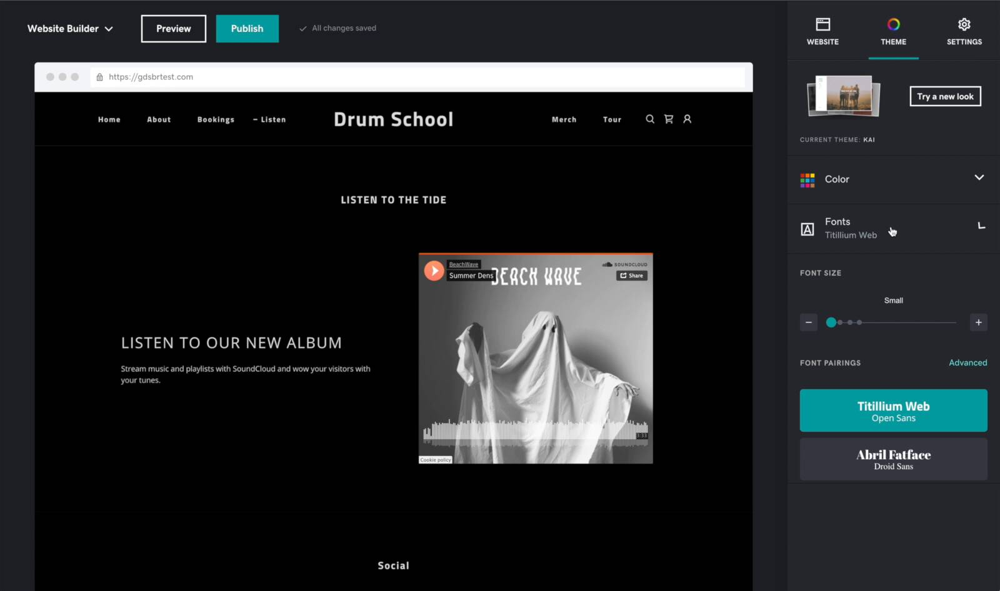
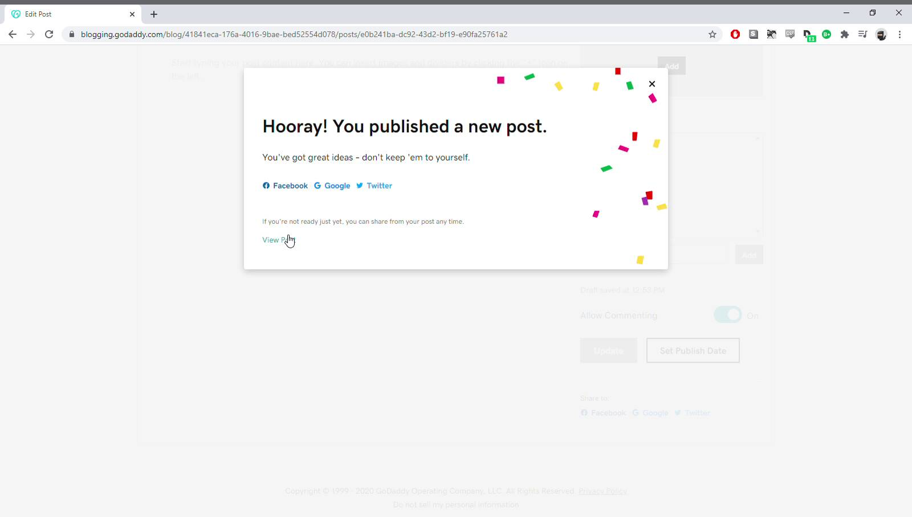
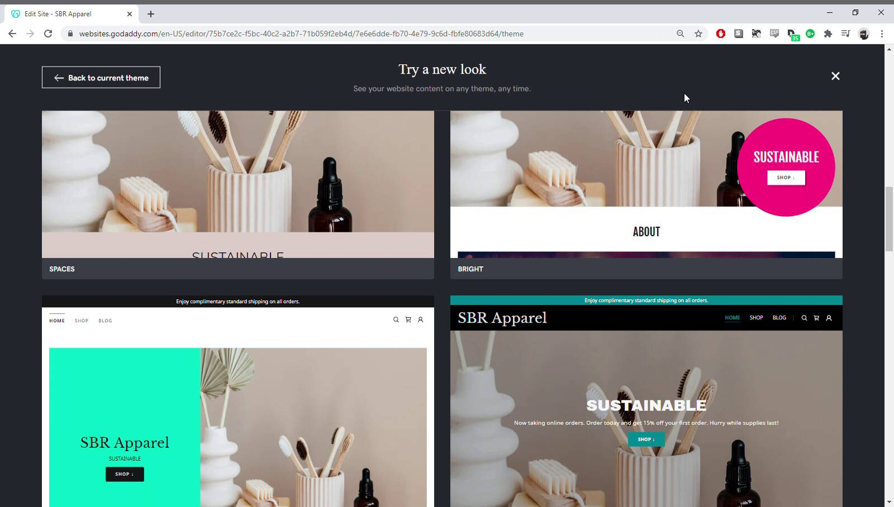
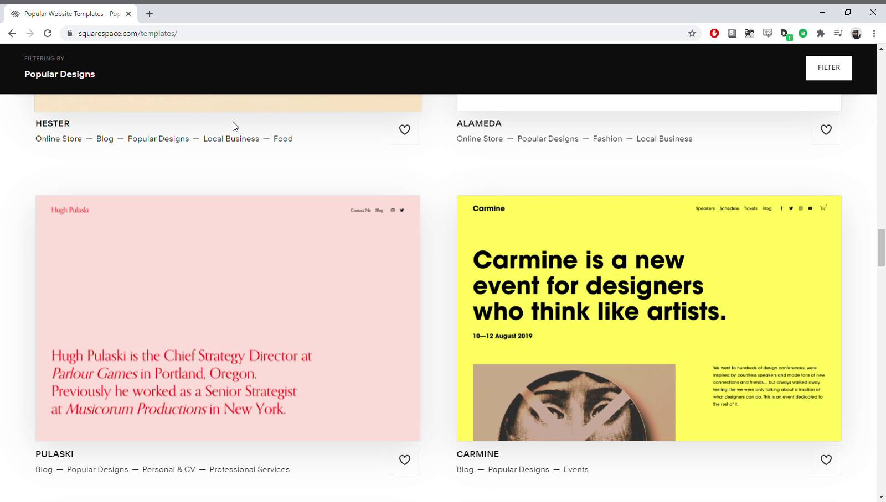
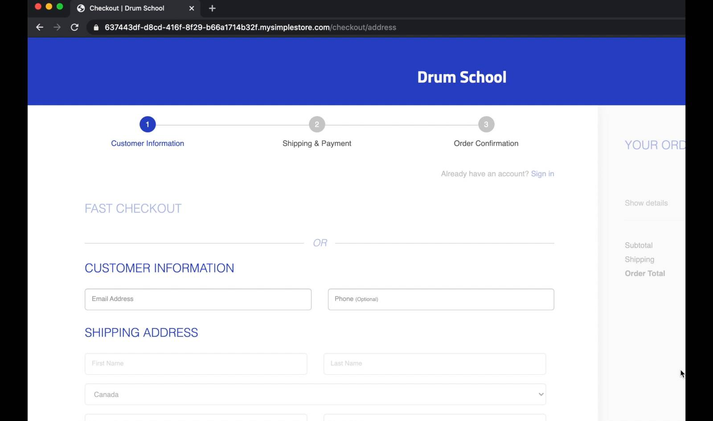
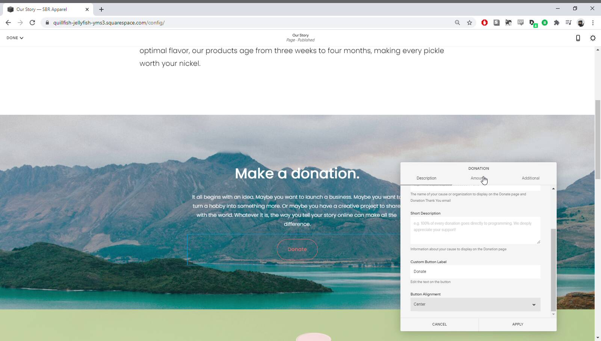

Squarespace is the best overall website builder, but GoDaddy could work for people who don’t have a lot of time or technical skills.
Squarespace themes are outstanding, and there’s lots of options for customization. Squarespace is also packed with features that you can trust to be among the best available for website builders.
GoDaddy is easy to use because it has fewer features. But this simplicity could certainly frustrate a lot of users – this article explains some of these limitations.
Squarespace vs GoDaddy At A Glance
-
GoDaddy has fewer features than Squarespace
The GoDaddy website builder is easy to use because it’s simple. Squarespace is packed with features, so it takes a bit more time to get used to.
-
Customizing in Squarespace is more intuitive and less restricted
Squarespace lets you click on any part of your website and customize it. GoDaddy limits what you can edit, and the process is less intuitive.
-
GoDaddy falls short in ecommerce
GoDaddy’s ecommerce features are basic, and not well-executed.
-
Squarespace is the best overall website builder
Most people will prefer Squarespace’s clean and thoughtful website builder.
-
But GoDaddy could work for some people
But some users – people who want to build their website fast or aren’t interested in spending time customizing it – may find that GoDaddy’s simple and basic features work for them.
Table of Contents
The Editors
GoDaddy’s editor is simple to use but limited in terms of what you can control and edit. This could suit users who don’t have a lot of time or technical experience, but many may become quickly frustrated with GoDaddy’s limitations.
In comparison, the Squarespace editor gives you a lot more options for customizing your website, at the expense of some of that simplicity. That said, Squarespace’s thoughtful UX design makes using their features feel comparatively enjoyable and intuitive.
So in terms of ease of use, GoDaddy might be slightly easier to use— but Squarespace is far more flexible.
Sections
Squarespace and GoDaddy both include sections in their editors. These are ready-made parts of a web page that are made up of smaller individual elements – things like galleries, donate links, “meet the team” and so on.

GoDaddy sections
Your options for customizing GoDaddy sections are limited. You can’t add more elements or change the layout in the section, you can only toggle them on or off, and you can only choose from three theme colors.
Squarespace plans also include a lot of pre-designed sections to choose from. You can customize these as much as you want by adding elements, changing the layout and tweaking the background, padding and colors.
Squarespace sections
Custom Styles
Squarespace helps you to keep consistent fonts, colors and text sizes throughout your website.
But all of these are fully customizable anywhere on the site. You can change font, color and text size (and image size, padding, section backgrounds and so on) for any individual part of your site.
GoDaddy, on the other hand, doesn’t give you a lot of control over your site’s style. One particularly bad example is font sizes – the only way to increase the font size in a header is with a slider that changes all headers across your site.

Changing a font size in GoDaddy
As well as this, you can’t inject <head> code in the GoDaddy editor to make sitewide changes – for example adding Google Analytics to your whole site. You have to use html blocks in individual pages instead. Squarespace doesn’t have this limitation.
User Experience
Despite having a lot more controls in the editor, using Squarespace is still a straightforward affair. This is because of their thoughtful user experience (UX) design.
Some content and site-wide design settings (like footers) can just be edited in the website panel of the editor. Other kinds of content will open up in a menu or an editor in a lightbox above the website panel (like a pop-up but in the same window in your browser).
You might be working on your online store, and you want to quickly amend something about one of your products. In Squarespace, you just double click that element and the menu gives you all the controls you need.
Editing a product in Squarespace
You change your price or stock level or whatever you need to change, save and close the menu and then move on through the editor.
In comparison, the user experience for GoDaddy is much less intuitive. If you’re editing your store page in GoDaddy, you can only change page-wide options like colors and layout inside the editor.
Store page in GoDaddy editor
The editor shows you store shortcuts for adding products, shipping and payment settings – but these links take you away from the editor.
You have to leave the GoDaddy editor to change product details
When you’re done, you have to navigate back to the editor and find where you left off.
It’s the same thing with other types of content, like blogs. To add or edit your posts, you need to leave the GoDaddy editor and go to their blogging interface. When you’re done and go to publish, GoDaddy warns you that your post isn’t live until you save changes in the editor.
Extra steps for saving your blog in GoDaddy
You have to navigate back to the editor to publish site changes. This is much less intuitive than simply saving and closing a “pop-up” window and returning to where you left off on your site – which is how Squarespace manages blogging.
Themes and Theme Customization
Both website builders come with pre-designed templates (Squarespace) or themes (GoDaddy). Squarespace has a lot more templates, more varied templates, and – most importantly – more options for customizing templates than GoDaddy has themes.
Themes
There are 22 themes to choose from in GoDaddy, versus over 100 in Squarespace. There’s a lot to be said for not offering too many themes – consider the hours you can lose browsing Wordpress’s open source themes – but Squarespace’s 100 is a manageable number.
Not only are there fewer themes to choose from in GoDaddy, but they are also much less varied. This means that GoDaddy home pages are all pretty much the same combination of a splash image, headline and action button.
GoDaddy homepages – they all have the same elements!
In comparison, Squarespace templates are a lot more varied. Templates are designed with particular usage cases in mind, so it’s easier to find one that closely fits your needs.
Squarespace templates
One downside to Squarespace templates is that you can’t change your template once you’ve chosen it, without starting your whole site again from scratch. GoDaddy makes it easy to pick a different theme for your website, keeping all of your content intact.
Theme Customization
As I mentioned in the editor section, GoDaddy gives you comparatively little control over the style of your site. You can only adjust colors, fonts and buttons in the theme editor.
Squarespace, however, gives you a lot more controls over the general template, as well features like a custom 404 page and custom CSS.
Make changes to your Squarespace template in the Design menu
While you can get into really granular detail here if you want – for example choosing where to apply font styles in different parts of your site – the default settings in the template are designed to look and work well right off the bat.
Aesthetics
Squarespace 7.1 de-emphasizes the importance of templates – all templates are built on the same basic framework which means they can all be edited and customized in the same way.
Despite this, Squarespace design hallmarks – big photos, clean design and bold typography – are still evident in a lot of their sites, and it’s straightforward to make a clean, professional and visually arresting website with template defaults.
In contrast, GoDaddy’s themes have smaller photos, busier design and less eye-catching typography.
Of course it’s possible to get around these default theme styles if you want to, and you might prefer the GoDaddy default styles anyway. But you will build a clean, professional-looking website by default with Squarespace.
Check out these visual differences for yourself in these examples of Squarespace and GoDaddy websites.
Online Presence
GoDaddy and Squarespace are both expanding beyond just website building, including more features around online presence in their packages.
GoDaddy wants to be the one-stop shop for businesses, but their features are relatively basic. Squarespace’s online presence features include built-in features and third-party extensions, and are known to be reliable.
A lot of Squarespace online presence features cost an additional fee on top of your website plan. The GoDaddy online presence features are included in all GoDaddy packages.
Scheduling
GoDaddy appointments lets you sync your calendar with one-off or repeating events which customers can book and pay for through your website.
GoDaddy appointments
For scheduling like this in Squarespace, you’ll need to enable Squarespace Scheduling. This costs an additional $15.00 per month, but you get what you pay for. Automatic client reminders are included, and customers can book, cancel or amend their appointments on your website.
Squarespace scheduling
Marketing features
GoDaddy’s email marketing is, again, basic. You need to create campaigns in markdown format, which could definitely put some users off. That said, it is included in the price.
Squarespace has a much more user-friendly layout for email marketing. You build campaigns just like you build pages on your website. It costs $5.00 per month extra (including a Squarespace ad in your emails) at the cheapest plan available.
Squarespace email marketing plans
GoDaddy has a built-in social media marketing tool, so that customers can manage their social media through the GoDaddy ecosystem. Again, it’s relatively basic.
With Squarespace, you’ll need to add the third-party Outfy extension for social media marketing. Outfy has a basic free forever plan, but you’ll need to pay to access features like automated video posts.
Outfy pricing
Social media and email marketing are the only built-in marketing features in GoDaddy. In comparison Squarespace has a much wider variety of marketing features available.
Squarespace marketing features
I really appreciate the URL builder. You can create custom URLs for products, campaigns, channels and so on. This means you can track your sales streams a lot more accurately, and adjust your marketing strategy accordingly.
Squarespace URL builder
Creating Content
GoDaddy has a Canva-like content creator built in. This is for making graphics like social media ads or shareable content.
GoDaddy content creator
Squarespace recently acquired Unfold, an app for creating stories for social media like Instagram or Snapchat. You need to download a separate app, and then subscribe at around $9.00 per month.
The Unfold app
Analytics
GoDaddy has a built-in tool for growing your website – InSights. This compares your website’s performance with similar businesses and gives you a score based on various traffic and engagement metrics (that you can’t see or change!). Based on this score, you get automatic tips to help you drive traffic and engagement to your site.
I think this is a really nice feature and will definitely appeal to people without a lot of time to manage their website. However, it’s limited and doesn’t give you granular detail.
Squarespace, on the other hand, gives you an overview of sales, traffic and geography, with detailed breakdowns for commerce (sales by product, purchase funnel and abandoned cart), acquisition (traffic sources and search keywords) and engagement (activity log, form and button conversions, popular content, site search keywords and RSS subscriptions).
You can also access these analytics from the mobile app – great for data obsessives, maybe not so great for their families and friends!
Ecommerce
We’ve said that Squarespace is the best website builder for ecommerce (excluding dedicated ecommerce builders like Shopify) and when you compare it to GoDaddy you can really see why.
GoDaddy’s ecommerce is its biggest downside. Here, they didn’t even get the basics right.
The checkout for your store isn’t hosted on your domain, so when customers go to purchase they’ll be redirected to mysimplestore.com.
Customers are redirected off your domain name during checkout
Squarespace keeps your customers on your domain throughout their purchase – this is really important for trust.
Adding products to your store is, again, fairly basic in GoDaddy.
GoDaddy products page
You don’t have a lot of options and you can’t customize key elements like email receipts or notifications.
Squarespace options for customer notifications, including customizable email receipts!
Squarespace is the only website builder (excluding dedicated ecommerce software like Shopify) to offer subscriptions functionality.
GoDaddy allows you to create physical products or downloaded digital products only. Squarespace has these as well as options for creating service and gift card products.
Squarespace product types
Finally, donations in Squarespace are very highly featured – you could run a large-scale fundraising campaign from your Squarespace site without having to use a third party like JustGiving.
Rich donation features Squarespace
GoDaddy only offers a simple donation section. You can choose from a few different layouts which all include a PayPall button, but that’s it. There’s no campaign management functionality, no automatic donation tracking, and you can’t customize thank you messages.
Conclusion
If you don’t have a lot of time, don’t mind the way most GoDaddy sites look, and just want to get a website up and running – then GoDaddy could be for you. But for a lot of users, its limitations will get frustrating quickly.
Squarespace is better overall, and most users will prefer its intuitive UX and beautiful graphics.
Frequently Asked Questions
What about customer support?
Squarespace has live chat and email customer support. GoDaddy has email, live chat and phone support (1 -866-938-1119).
What about Wix?
Check out our Wix Review or our comparison of Wix vs Squarespace for more info on Wix.
Can I use Squarespace with GoDaddy?
Yes— you can buy your domain name with GoDaddy and point it to a Squarespace website. Squarespace has a tutorial that explains how to do this.
Do professionals use Squarespace?
Yes. Squarespace Circles is a community of professional web designers who use Squarespace for client sites.
Do I own my Squarespace domain?
Yes. Squarespace helps you register a domain name but you own the domain name.
Related Articles:
-
WordPress vs Website Builders
Should you use WordPress or a website builder to build a website? Well, it depends— mostly on you.
-
Shopify vs WooCommerce
Shopify and WooCommerce are both great ecommerce site builders, but for very different users.
-
Squarespace vs Shopify: Which is Better? (2022)
Trying to decide between Squarespace and Shopify? Make sure you understand these important differences.
-
How Squarespace And WordPress Are Different
Squarespace and WordPress are both tools for building website but this article explains how they are different.
-
Wix vs Shopify: Is There Even a Competition? (2022)
Trying to decide between Wix and Shopify? Make sure you understand these important differences.
-
Wix vs Squarespace
From themes to editors, the two most popular website builders have important differences.
-
Wix vs Weebly
Five important differences to understand before choosing between Wix and Weebly.
-
Wix vs WordPress
Eight important differences to understand before deciding between Wix and WordPress.